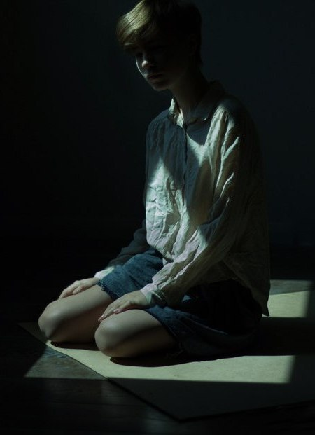

Eva Shteiner
I am a multidisciplinary photographer and designer with a background in media design and art history.
Before I worked as a photographer for several years, focusing on portraits, model portfolios, romantic photoshoots and creative collaborations with artists and musicians. Today I combine that experience with graphic and web design, creating brand identities, logos, posters, album visuals, and websites for personal, business, and music projects.
Living in Vienna, I work in English, German, and Russian, and focus on expressive, fresh visual solutions that connect aesthetics with clear communication.
2016 Design at the High School of Economics in Moscow
2015 Photography at the “British High School of Art and Design”
2024 Media design at the Lik Academy
2026 Bachelor of History of Art at the University of Vienna
